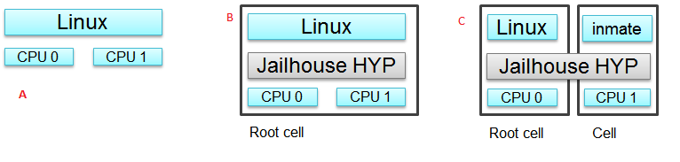

3.7.1. Jailhouse Hypervisor¶
Overview
Jailhouse is a static partitioning hypervisor that runs bare metal binaries. It cooperates closely with Linux. Jailhouse doesn’t emulate resources that don’t exist. It just splits existing hardware resources into isolated compartments called “cells” that are wholly dedicated to guest software programs called “inmates”. One of these cells runs the Linux OS and is known as the “root cell”. Other cells borrow CPUs and devices from the root cell as they are created.
The picture above shows the jailhouse on a system a) before the jailhouse is enabled; b) after the jailhouse is enabled; c) after a cell is created.
Jailhouse consists of three parts: kernel module, hypervisor firmware and tools, which a user uses to enable the hypervisor, create a cell, load inmate binary, run and stop it. Jailhouse is an example of Asynchronous Multiprocessing (AMP) architecture. When we boot Linux on devices wih ARM CPU clusters, Linux uses all the cores. After we enable hypervisor it moves Linux to the root-cell. The root cell still uses all the CPU cores. When we create a new cell, hypervisor calls cpu_down() for some of the CPU cores to offline them. The new cell will use these CPU cores and hardware resources dedicated for this cell in the cell configuration file.
Jailhouse is an open source project, which can be found on https://github.com/siemens/jailhouse.
3.7.1.1. Keystone3 Jailhouse Demo¶
The goal of this demo is to partition the CPU cores and run a second instance of the Linux kernel with a ramfs root filesystem. The inmate kernel will use the secondary UART to provide a login shell to the user.
Step 1: Host Setup
As we will be running two instances of the Linux kernel, two terminals are required. Connect one terminal to the primary UART (e.g. /dev/ttyUSB0) and the other to the secondary UART (e.g. /dev/ttyUSB1).
Step 2: Configure U-Boot
The default boot configuration does not reserve any resources for the Jailhouse hypervisor nor the inmates. However, the root filesystem contains a device tree overlay that will carve out these requirements. U-Boot must be configured to apply this device tree overlay.
For this step, we will be using the terminal connected to the primary UART.
We will need to add the jailhouse device tree overlay to the list of overlays to apply in u-boot.This is controlled by the environment variable “overlay_files”. Processor SDK Linux J721e comes with readymade uenv.txt where this variable is set to define the list of DTBO files for running the jailhouse demo. Refer to the section How to Change dtb File for more details on this.
Step 3: Boot Linux and login
Now boot the kernel and log in to the shell:
=> boot
...
_____ _____ _ _
| _ |___ ___ ___ ___ | _ |___ ___ |_|___ ___| |_
| | _| .'| . | . | | __| _| . | | | -_| _| _|
|__|__|_| |__,|_ |___| |__| |_| |___|_| |___|___|_|
|___| |___|
Arago Project http://arago-project.org am65xx-evm ttyS2
Arago 2019.07 am65xx-evm ttyS2
am65xx-evm login: root
root@am65xx-evm:~#
Step 4: Run the Jailhouse linux-demo
The jailhouse package contains a single script to run the Linux inmate demo. This script combines the typical jailhouse commands to simplify running the demo for the first time. This script performs the following steps.
- Enables jailhouse by loading and running the hypervisor firmware and configuring the root cell.
- Creates the inmate cell, providing it with its resources.
- Loads the inmate into memory.
- Starts the inmate.
To run the demo, run the linux-demo.sh script.
root@am65xx-evm:~# /usr/share/jailhouse/linux-demo.sh
Initializing Jailhouse hypervisor v0.10 (152-g6dce20f) on CPU 2
Code location: 0x0000ffffc0200800
Page pool usage after early setup: mem 39/991, remap 0/131072
Initializing processors:
CPU 2... OK
CPU 3... OK
CPU 1... OK
CPU 0... OK
Initializing unit: irqchip
Initializing unit: PVU IOMMU
Initializing unit: ARM SMMU v3
Initializing unit: PCI
Adding virtual PCI device 00:00.0 to cell "k3-am654-idk"
Initializing unit: regmap
Page pool usage after late setup: mem 71/991, remap 144/131072
Activating hypervisor
[ 63.162406] jailhouse: CONFIG_OF_OVERLAY disabled
[ 63.167261] jailhouse: failed to add virtual host controller
[ 63.172978] The Jailhouse is opening.
[ 63.251354] CPU2: shutdown
[ 63.254071] psci: CPU2 killed.
[ 63.303312] CPU3: shutdown
[ 63.306033] psci: CPU3 killed.
Adding virtual PCI device 00:00.0 to cell "k3-am654-idk-linux-demo"
Shared memory connection established: "k3-am654-idk-linux-demo" <--> "k3-am654-idk"
Created cell "k3-am654-idk-linux-demo"
Page pool usage after cell creation: mem 93/991, remap 144/131072
[ 63.355266] Created Jailhouse cell "k3-am654-idk-linux-demo"
Cell "k3-am654-idk-linux-demo" can be loaded
Started cell "k3-am654-idk-linux-demo"
root@am65xx-evm:~#
Now, on the secondary terminal, verify that the inmate kernel has booted with ramfs. Also note that the /dev/ttySX number used for root cell and inmate may or may not match.
_____ _____ _ _
| _ |___ ___ ___ ___ | _ |___ ___ |_|___ ___| |_
| | _| .'| . | . | | __| _| . | | | -_| _| _|
|__|__|_| |__,|_ |___| |__| |_| |___|_| |___|___|_|
|___| |___|
Arago Project http://arago-project.org am65xx-evm /dev/ttyS1
Arago 2019.07 am65xx-evm /dev/ttyS1
am65xx-evm login: root
root@am65xx-evm:~# mount
rootfs on / type rootfs (rw,size=230400k,nr_inodes=3600)
proc on /proc type proc (rw,relatime)
sysfs on /sys type sysfs (rw,relatime)
debugfs on /sys/kernel/debug type debugfs (rw,relatime)
configfs on /sys/kernel/config type configfs (rw,relatime)
devtmpfs on /dev type devtmpfs (rw,relatime,size=230400k,nr_inodes=3600,mode=755
)
tmpfs on /run type tmpfs (rw,nosuid,nodev,mode=755)
tmpfs on /var/volatile type tmpfs (rw,relatime,size=51200k)
devpts on /dev/pts type devpts (rw,relatime,gid=5,mode=620,ptmxmode=000)
Jailhouse Internals
This section gives some Jailhouse details and required kernel modifications.
Linux Kernel Modifications
In order to run hypervisor itself and inmates, jailhouse requires additional nodes in kernel dtb. Refer to platform-specific jailhouse device tree or DT overlay for details on the required nodes or modifications.
Memory Reservation
Linux kernel has to reserve some memory for jailhouse hypervisor and for inmate. This memory has to be reserved statically. Following example shows reservation of 16MB physical memory for hypervisor and 16MB for inmates.
/ {
reserved-memory {
jailhouse: jailhouse@ef000000 {
reg = <0x0 0xef000000 0x0 0x1000000>;
no-map;
status = "okay";
};
jh_inmate: jh_inmate@ee000000 {
reg = <0x0 0xee000000 0x0 0x1000000>;
no-map;
status = "okay";
};
};
};
Hardware Modules Reservation
Jailhouse is a partitioning hypervisor. This means a HW peripheral is in exclusive control of one of the cells. Jailhouse cell config file defines this ownership to ensure that all accesses to peripherals are isolated between different cells. Access to any peripheral outside of the owned will be treated as violation, and jailhouse will park that cell. To ensure that Linux uses only the assigned peripheral, we can disable the peripherals which are owned by the other cell.
Following nodes describe an example of how devices are disabled in the root cell device tree.
/* Disable uart used by inamte cell */
&main_uart1 {
status = "disabled";
};
/* Disable emmc instance used by inamte cell */
&main_sdhci0 {
status = "disabled";
};
Root-cell configuration
When hypervisor is being enabled, it creates a cell for Linux and moves it to that cell. The cell is called as “root-cell”. The cell configuration as a “*.c” file which is compiled to a special binary format “*.cell” file. The hypervisor uses the “cell” file to create a cell. The cell configuration describes memory regions and their attributes which will be used by the cell:
.mem_regions = {
/* OCMCRAM */ {
.phys_start = 0x40300000,
.virt_start = 0x40300000,
.size = 0x80000,
.flags = JAILHOUSE_MEM_READ | JAILHOUSE_MEM_WRITE |
JAILHOUSE_MEM_IO,
},
/* 0x40380000 - 0x48020000 */ {
.phys_start = 0x40380000,
.virt_start = 0x40380000,
.size = 0x7ca0000,
.flags = JAILHOUSE_MEM_READ | JAILHOUSE_MEM_WRITE |
JAILHOUSE_MEM_IO,
},
/* UART... */ {
.phys_start = 0x48020000,
.virt_start = 0x48020000,
.size = 0xe0000,//0x00001000,
.flags = JAILHOUSE_MEM_READ | JAILHOUSE_MEM_WRITE |
JAILHOUSE_MEM_IO,
},
...
/* RAM */ {
.phys_start = 0x80000000,
.virt_start = 0x80000000,
.size = 0x6F000000,
.flags = JAILHOUSE_MEM_READ | JAILHOUSE_MEM_WRITE |
JAILHOUSE_MEM_EXECUTE,
},
/* Leave hole for hypervisor */
/* RAM */ {
.phys_start = 0xF0000000,
.virt_start = 0xF0000000,
.size = 0x10000000,
.flags = JAILHOUSE_MEM_READ | JAILHOUSE_MEM_WRITE |
JAILHOUSE_MEM_EXECUTE,
},
Following code snippet shows the bitmap of CPU cores dedicated for the cell:
.cpus = {
0x3,
},
Following code snippet shows the bitmap of interrupt controller SPI interrupts:
.irqchips = {
/* GIC */ {
.address = 0x48211000,
.pin_base = 32,
.pin_bitmap = {
0xffffffff, 0xffffffff, 0xffffffff, 0xffffffff
},
},
/* GIC */ {
.address = 0x48211000,
.pin_base = 160,
.pin_bitmap = {
0xffffffff, 0, 0, 0
},
},
},
These settings are for all cells.
In addition, the root cell also allocates the physical memory for the hypervisor.
.hypervisor_memory = {
.phys_start = 0xef000000,
.size = 0x1000000,
},
The “memory regions” section is used by hypervisor to create the second stage MMU translation table. Usually for root-cell, the identical mapping is being used - “VA = PA”.
Bare Metal Inmate Example
Jailhouse comes with inmate demos located at the inmates/demos directory. Current (v0.6) version has two demo inmates: gic-demo and uart-demo. Those are very simple bare-metal applications that demonstrate a uart and arm-timer interrupt. Those demos are common for all jailhouse platforms.